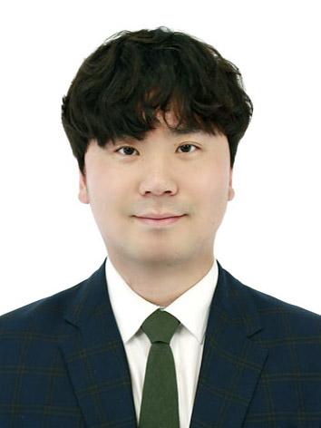
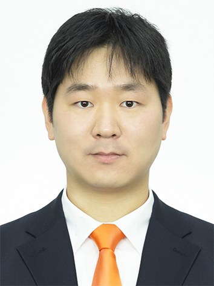
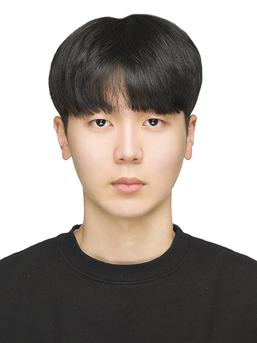
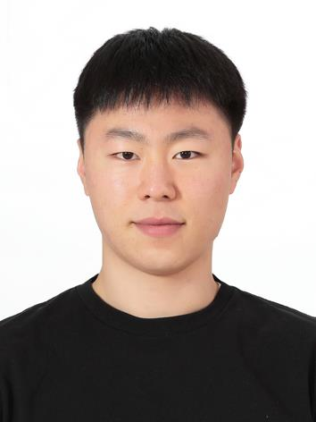

김태곤
- 영문이름: Taegon Kim
- 전공: 지역시스템공학
- 직급: 조교수(학과장)
- 전화번호: 063-270-2557
- 이메일: taegon@jbnu.ac.kr
- 연구분야: 디지털농업, 원격탐사
- 연구실: 스마트디지털농업연구실

이준우
- 영문이름: Joon-Woo Lee
- 전공: 원예학
- 직급: 조교수 (전임)
- 전화번호: 063-270-2558
- 이메일: jw.lee@jbnu.ac.kr
- 연구분야: 작물 생산 시스템
- 연구실: 식물환경조절공학연구실

윤경담
- 영문이름: Kyungdahm Yun
- 전공: 환경산림학
- 직급: 조교수 (전임)
- 전화번호: 063-270-4852
- 이메일: kdyun@jbnu.ac.kr
- 연구분야: 작물 모델링
- 연구실: 작물모형연구실
윤시원
- 영문이름: Siwon Yoon
- 전공: 기계공학
- 직급: 조교수(전임)
- 전화번호: 063-270-2563
- 이메일: siwon903@jbnu.ac.kr
- 연구분야: 스마트팜 에너지 시스템
- 연구실: 스마트팜 에너지 솔루션 연구실

김하종
- 영문이름: Hajong Kim
- 전공: 스마트팜학
- 직급: 학생
- 학번: 202121887
- 이메일: hajong0625@gmail.com
- 특징: 잘생김

양희준(Matrix)
- 영문이름: Huijun Yang
- 전공: 스마트팜학, 기계시스템공학
- 직급: 학생
- 학번: 202217715
- 이메일: huijun1481@gmail.com
- 특징: 유머러스